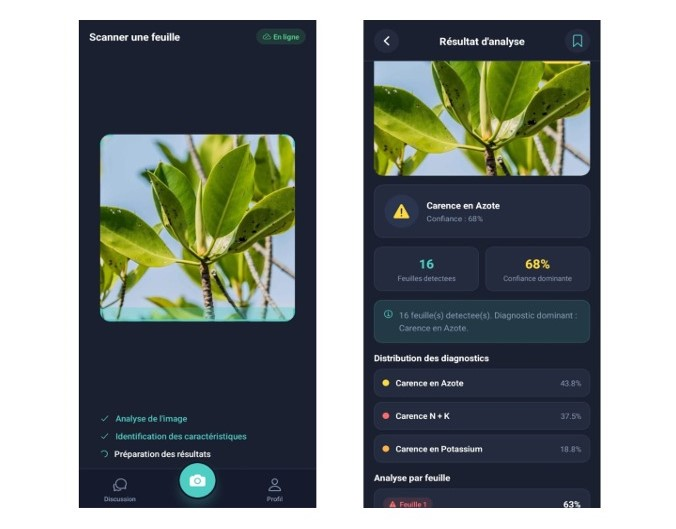
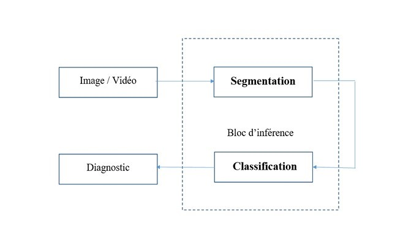
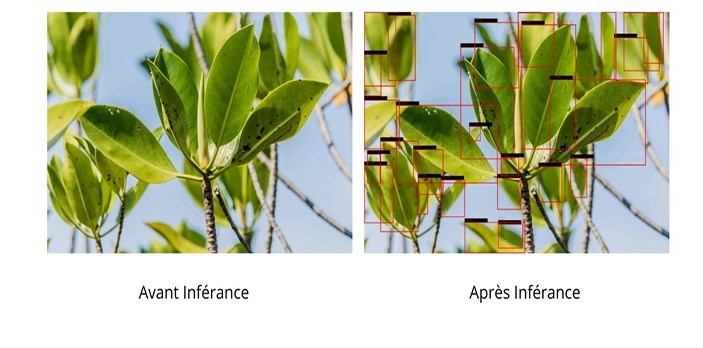
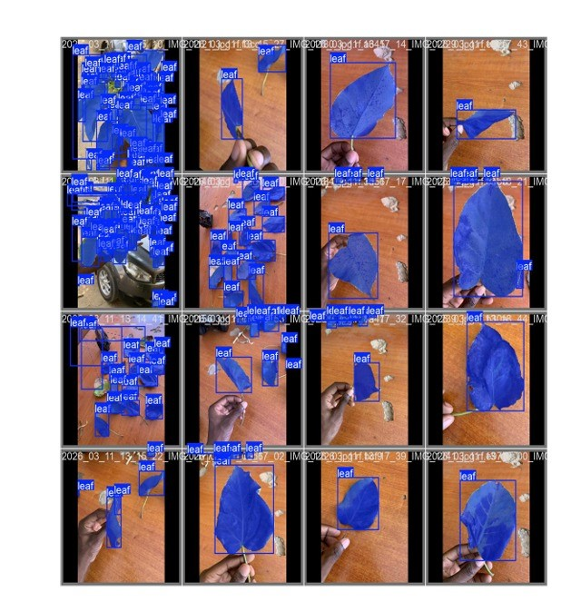
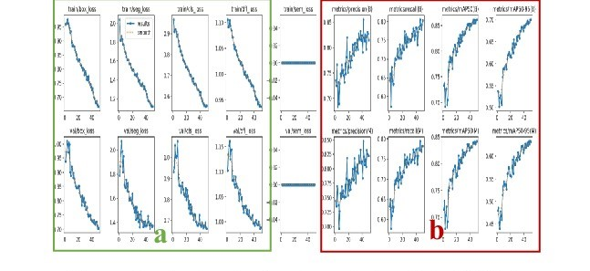
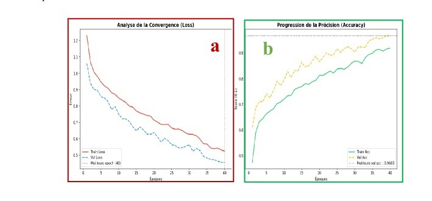
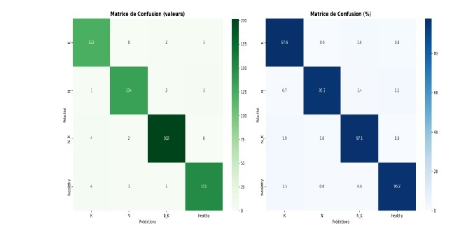
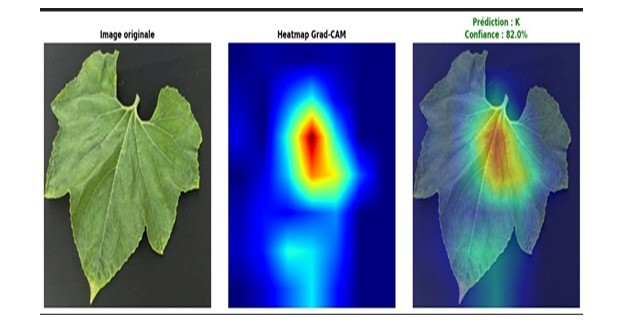
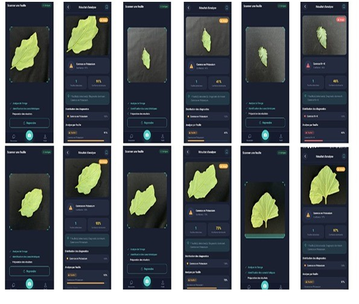

Jeu de données Kaggle
Un jeu de données public d'images de feuilles, utilisé comme base d'entraînement pour la classification des carences nutritives.
Système de vision par ordinateur pour la détection du stress des mangroves, à partir de simples photos ou vidéos. Conçu pour évoluer vers un embarquement sur drone et un suivi en temps réel.
Le projet cible les écosystèmes fragiles des mangroves du lac Nokoué. Le stress des plantes y est difficile à repérer à l'œil nu et sur de grandes surfaces. L'objectif est de concevoir un modèle léger et performant, capable à terme d'être embarqué sur drone pour cartographier et détecter le stress en continu.
L'application mobile actuelle sert de prototype de test terrain : elle permet de valider rapidement les inférences à partir de photos ou de vidéos, sans infrastructure lourde.
Statut du projet
Les modèles sont actuellement entraînés et évalués sur un jeu de données public et sur des photos de terrain annotées. La validation à grande échelle sur des mangroves, avec des diagnostics confirmés par des experts, fait partie des prochaines étapes.

Un jeu public pour la classification, des photos de terrain pour la segmentation.
Un jeu de données public d'images de feuilles, utilisé comme base d'entraînement pour la classification des carences nutritives.
Photos de feuilles prises sur le terrain, annotées sous Roboflow pour entraîner la segmentation et rapprocher le modèle des conditions réelles : arrière-plans variés, lumière naturelle, plusieurs feuilles par image.
D'abord trouver les feuilles, ensuite les diagnostiquer une par une.

Acquisition
Photo ou vidéo prise sur le terrain avec le téléphone, plus tard par un drone.
Segmentation
YOLOv8 détecte chaque feuille et produit son masque, même sur une scène chargée.
Classification
ResNet50 analyse chaque feuille isolée et prédit l'une des quatre classes avec un niveau de confiance.
Diagnostic
Agrégation des résultats : diagnostic dominant, distribution des diagnostics et analyse feuille par feuille.
YOLOv8 isole les feuilles sur des images complexes ou des flux vidéo et atteint un mAP@50 de 86 %. Cette étape évite que l'arrière-plan (sol, mains, objets) perturbe la classification.


ResNet50 prend le relais sur les feuilles segmentées. Le modèle est affiné par transfer learning pour distinguer une feuille saine d'une carence en azote, en potassium ou combinée.
Suivi de la convergence des deux modèles pendant l'entraînement.


Évaluation du ResNet50 sur les quatre classes.
| Classe | Précision | Rappel | F1-score | Aperçu F1 |
|---|---|---|---|---|
| Healthy (saine) | 96,8 % | 96,2 % | 96,5 % | |
| N · azote | 97,1 % | 95,7 % | 96,4 % | |
| K · potassium | 95,3 % | 97,6 % | 96,4 % | |
| N_K · combinée | 97,6 % | 97,1 % | 97,3 % | |
| Moyenne pondérée | — | — | 96,6 % |
Les quatre classes obtiennent des scores proches (F1 entre 96,4 % et 97,3 %), ce qui indique un modèle équilibré qui ne privilégie pas une classe au détriment des autres.
La diagonale fortement marquée montre que la grande majorité des feuilles sont correctement classées. Les rares erreurs concernent surtout des classes proches visuellement.

Visualiser les zones de la feuille qui pèsent le plus dans la prédiction.
Grad-CAM produit une carte de chaleur indiquant sur quelles zones de l'image le réseau s'appuie. Elle permet de vérifier que le modèle regarde bien la feuille et non l'arrière-plan, et d'identifier d'éventuels biais.

Le service d'inférence est exposé par une API et testé depuis un prototype mobile.
API FastAPI
Charge les modèles, reçoit l'image, exécute la segmentation puis la classification et renvoie le diagnostic.
Application Flutter
Scan d'une feuille avec l'appareil photo, suivi des étapes d'analyse et affichage du rapport.
Rapport de diagnostic
Nombre de feuilles détectées, diagnostic dominant, distribution des diagnostics et confiance feuille par feuille.

J'ai conçu, entraîné et évalué les modèles de segmentation et de classification, puis je les ai intégrés dans une API et un prototype d'application mobile.
Le code source et les modèles entraînés sont privés. Je peux présenter le projet en détail et partager le code sur demande.